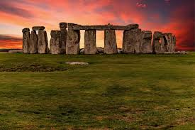

Stonehenge is one of the most iconic and mysterious landmarks in the world, located in Wiltshire, England. This ancient stone circle dates back over 4,500 years, and its purpose remains a subject of debate. Some believe it was used for religious ceremonies, while others think it served as an astronomical observatory. The large stones are thought to have been transported from over 20 miles away, a remarkable feat for its time. Stonehenge is now a UNESCO World Heritage site and attracts millions of visitors each year, who come to marvel at its construction and ponder its origins.

The Tower of London is a historic fortress located on the River Thames in central London. Originally built by William the Conqueror in 1078, it has served many purposes throughout history, including as a royal palace, prison, and treasury. The Tower is famous for housing the Crown Jewels, which are the ceremonial jewels used in the coronation of British monarchs. Visitors can explore the Tower’s many towers and chambers, including the Bloody Tower, where the Princes in the Tower are believed to have been murdered, adding to the site’s rich, sometimes macabre history.

Perched atop the extinct volcanic rock known as Castle Rock, Edinburgh Castle is a stunning fortress with a rich history dating back over 1,000 years. The castle has served as a royal residence and military stronghold and is now one of Scotland's most popular tourist attractions. Visitors can see the Crown Jewels of Scotland, the Stone of Destiny, and the National War Museum of Scotland. The castle also offers spectacular views of the city and the surrounding countryside, making it a must-see when visiting Edinburgh.

Buckingham Palace is the official residence of the British monarch in London. It has been the royal residence since Queen Victoria’s reign in the 19th century and is a symbol of the British monarchy. The palace is a major tourist attraction, particularly for the Changing of the Guard ceremony, which is held in front of the palace daily during the summer months. The palace's magnificent state rooms are used for official functions and are open to the public during the summer. The surrounding gardens are also a beautiful area to explore during special events like summer garden parties.
.jpg)
Big Ben is the nickname for the Great Bell of the Elizabeth Tower, located at the Palace of Westminster in London. The bell, which weighs over 13 tons, is one of the largest and most famous bells in the world. The tower, built in the mid-19th century, is a striking example of Gothic Revival architecture. Big Ben’s chimes are heard around London and internationally and have become synonymous with the city itself. The clock tower was renamed Elizabeth Tower in 2012 in honor of Queen Elizabeth II’s Diamond Jubilee.

The Lake District is a stunning national park located in northwest England, famous for its scenic beauty, including sparkling lakes, towering mountains, and charming stone villages. The area has inspired poets such as William Wordsworth and Samuel Taylor Coleridge. The Lake District is a popular destination for outdoor enthusiasts, offering a wide range of activities including hiking, boating, cycling, and fishing. Visitors can explore the picturesque lakes like Windermere, Ullswater, and Derwentwater, or visit historic landmarks such as Beatrix Potter’s home and the home of John Ruskin.
.jpg)
The Houses of Parliament, also known as the Palace of Westminster, is the seat of the UK’s government, where both Houses of Parliament—the House of Commons and the House of Lords—meet to debate and pass laws. The building itself is an architectural masterpiece, with a history that stretches back over 1,000 years. The iconic clock tower, known as Big Ben, is one of the most recognized landmarks in the world. Visitors can take guided tours of the historic halls, including the grand Westminster Hall and St Stephen’s Hall, where historic debates have taken place.

Oxford University, founded in the 12th century, is the oldest university in the English-speaking world. The university comprises a number of colleges, each with its own unique history and architecture. Oxford is renowned for its academic excellence and has produced many famous scholars, writers, and world leaders, including Stephen Hawking, J.R.R. Tolkien, and Bill Clinton. Visitors to Oxford can tour the university's beautiful colleges, libraries, and museums, such as the Bodleian Library and the Ashmolean Museum, or simply enjoy the picturesque streets of this historic city.

Located in the city of Bath, England, the Roman Baths are one of the best-preserved ancient Roman sites in the world. The complex was built around the hot springs that have been in use for over 2,000 years. The site includes a temple, a bathhouse, and a series of natural hot springs that were believed to have healing properties. Visitors can explore the ruins, see the beautifully preserved bathhouse, and learn about the Romans’ use of water in their daily lives. The Roman Baths are an essential part of Bath’s rich history and have made the city a UNESCO World Heritage site.

St. Paul’s Cathedral, located in the heart of London, is one of the largest and most famous cathedrals in the world. Designed by Sir Christopher Wren after the Great Fire of London in 1666, it is known for its magnificent dome, which is one of the largest in the world. St. Paul’s has hosted many significant events, including the funerals of Admiral Lord Nelson and Winston Churchill. The cathedral's stunning interior features intricate mosaics, sculptures, and paintings. Visitors can climb to the top of the dome for breathtaking views of London, making it a popular destination for tourists and locals alike.